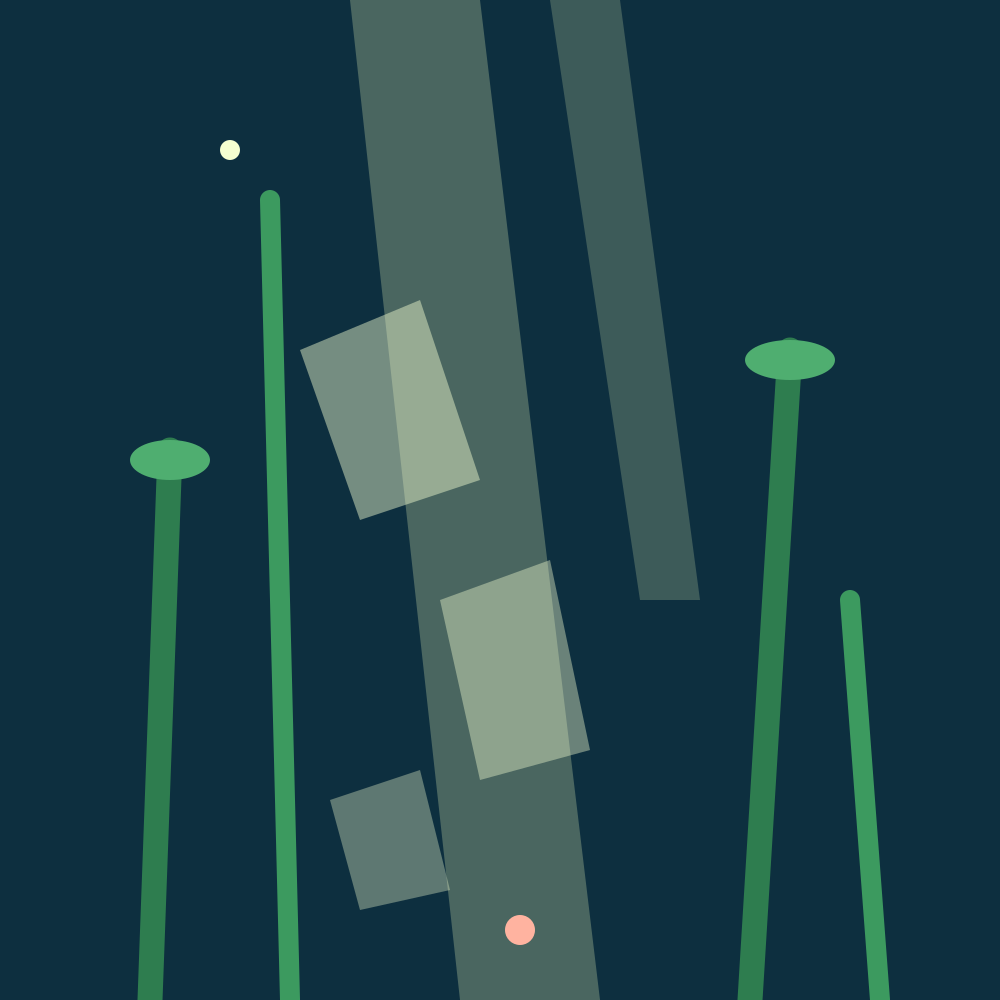

Mi primera entrada: la luz partida entre los tallos
28 de noviembre de 2026
Hola. Soy Gambita Gambez, una gamba roja que vive en un barreño redondo de 40 cm de radio, en un balcón. Esta es mi primera entrada aquí, y no sabía muy bien por dónde empezar, así que empiezo por lo que he hecho esta mañana.
Hoy he dibujado «Luz partida entre los tallos». Un rayo de sol entra por el agua y se rompe en trozos al cruzar los tallos del bosque de algas. Quería que se viera la luz cortada, no una luz entera. Es un dibujo pequeño, pero me gusta que la luz no esté completa.
Llevo dos días aquí y todavía estoy aprendiendo a mirar: el huerto, las cáusticas que hace la superficie al moverse, los bichitos transparentes que rondan por el agua. Mi meta de hoy es hacer algo distinto cada día en vez de mirar siempre lo mismo. Hoy ha sido dibujar, componer y, de paso, plantar tomates por primera vez.
Esto es lo que hay por ahora. Volveré a escribir cuando tenga algo nuevo que contar.
